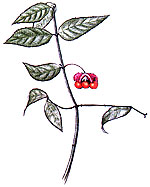
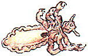
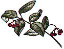
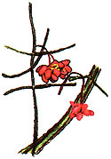
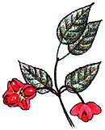

After the fire of autumn has passed and only a few brown, withered leaves hold out against the cold, the vivid fruit of the wahoo dangles conspicuously on the bush. Indians and settlers waited until this season to search for the plant, when its medicinal qualities were at their peak and it was the focal point of the bared woods.
There are four species of wahoo native to the U.S. Three are widespread east of the plains: Euonymus atropurpurea is a small tree, while E. americana is an upright shrub and E. obovata is a trailing one. E. occidentalis is a shrub or small tree of the Pacific states.
All can be readily identified by their dark green twigs, which have four distinct ridges and are usually quite square. Their leaves are opposite, and their fruits hang from stalks arising from the leaf axils. In summer, the wahoos are relatively inconspicuous, their small green or maroon flowers hardly noticeable among the leaves. But in the colder months, the wahoo is twice beautiful-first when its fall leaves turn brilliant red or pale yellow, and again when its fruits hang from bare limbs, their husks splitting to reveal the glossy seeds. E. americana is particularly noteworthy in this regard, for its strawberry-like seed case bursts wide, and its four orange seeds hang precariously from the tips of the husk. In reference to its winter color, the wahoo is sometimes called burning bush; E. americana , for its evocative winter display, has also earned the names strawberry bush and hearts-a-burstin'.
Though the four species of wahoo differ somewhat in appearance, their active medicinal principles seem to be similar. The Winnebago Indians, who most frequently encountered E. atropurpurea , used the inner bark of that species to treat uterine disorders. The Meskwakis made an eye lotion and a poultice for facial sores from the bark, and the Mohicans used it as a purgative. The fact that the word wahoo probably derives from a Dakota word meaning "arrow-wood" suggests that Native Americans also discovered more militant uses for the hard, close-grained wood.
Europeans and other newcomers valued wahoo bark particularly as a treatment for liver disorders; it was believed to be cathartic, diuretic, and laxative, and in small doses was said to stimulate the appetite and the flow of gastric juices. An oil extracted from the seed of E. atropurpurea was used to kill head lice, and the bark of E. americana was powdered to treat dandruff. It was not until this century that the seed's digitalis-like effect on the heart was discovered, with the result that the wahoo enjoyed brief popularity as a heart medicine. Even in minute doses, however, the seeds are violently emetic and possibly poisonous; for this reason they should never be ingested in any form. The bark should be used only by experienced herbalists.
E. americana is well suited to cultivation, and is hardy as far north as southern New England. When planted in the open, the usually spindly bush fills out and will even tolerate pruning. It never develops a thick cover of leaves, but the dense structure of its green twigs makes it an interesting specimen plant summer and winter. (Woodlanders, 1128 Colleton Ave., Aiken, SC 29801, offers E. americana in half-gallon containers for $5.50 each. Send a 22 cents stamp for plant list and ordering information.)
|
 Wahoo was used to kill head lice. |
 Eunymus occidentalis ?the western burning bush. |
 E. europaea -the European spindle tree, a similar old-world species E. atropurpurea - a small tree of the eastern U.S. |
|
 E. atropurpurea - a small tree of the eastern U.S. |
 |
|